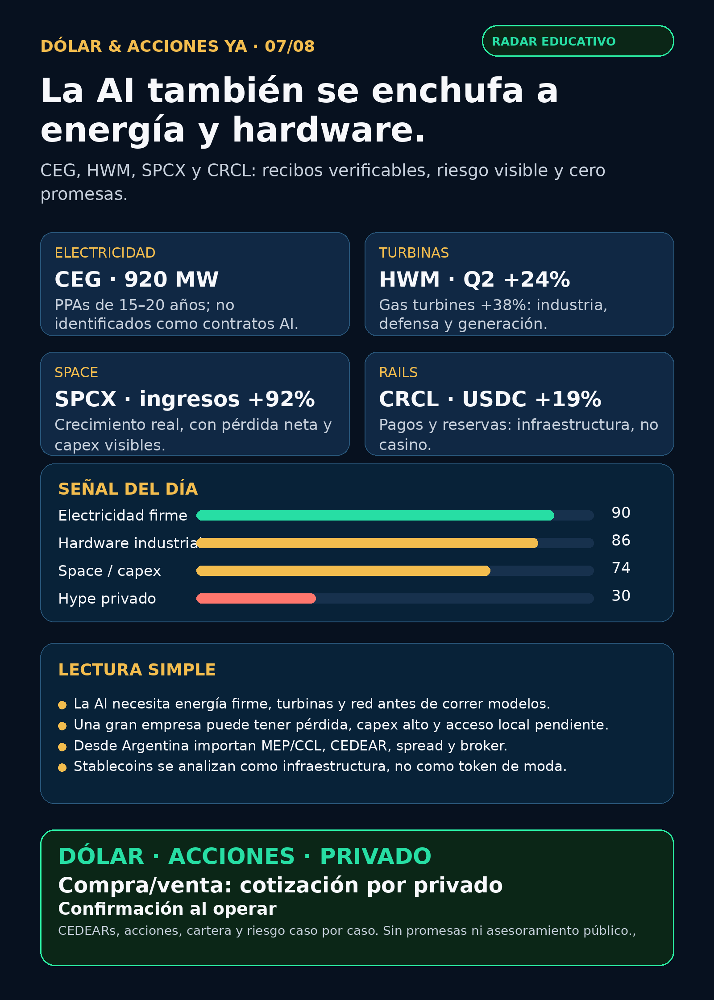

La AI también se enchufa a energía y hardware.
CEG, HWM, SPCX y CRCL: recibos verificables, riesgo visible y cero promesas.
Texto WhatsApp
Placa del día

Dólar & Acciones YA — 07/08
Fecha de edición: 2026-08-07. Corte público: 08:48 ART, America/Argentina/Mendoza. El mercado estadounidense todavía no abrió; no se publican precios de acciones ni instrucciones de ejecución. Esto es research educativo para Argentina y para una cartera global; no es recomendación personalizada de compra ni de venta.
Lectura simple del día
La señal de hoy no viene de una GPU: viene de la electricidad firme, las turbinas y el hardware industrial. Constellation Energy (CEG) sumó contratos de generación nuclear de largo plazo; Howmet (HWM) mostró crecimiento real en aeroespacial, defensa y turbinas de gas; y SpaceX (SPCX) volvió a poner una idea importante sobre la mesa: una empresa puede crecer muy rápido y, al mismo tiempo, requerir mucho capital y perder plata.
Las señales están ordenadas por evidencia y valor educativo, no por orden de compra. Buena empresa ≠ buena inversión al precio actual ≠ buen instrumento para Argentina ≠ tamaño correcto dentro de una cartera.
Capa Argentina: dólar, MEP/CCL y CEDEARs
- Dólar público: BlueLytics informó blue vendedor ARS 1.530 y oficial vendedor ARS 1.518, actualizado el 07/08 a las 08:45 ART.
- Referencias financieras: CriptoYa mostró MEP AL30 24hs ARS 1.520,54 y CCL AL30 24hs ARS 1.632,06, ambos con hora de cierre del 06/08 cerca de las 16:59 ART. Son referencias públicas de cierre, no cotización intradiaria de un broker.
- En criollo: un CEDEAR es un instrumento local que representa una fracción de un activo extranjero. Antes de mover plata hay que mirar ratio, CCL implícito, libro, volumen, spread, plazo y comisiones. Que un ticker exista afuera no prueba disponibilidad ni liquidez en IOL/PPI.
Accionable local Argentina: YPF es emisor local, pero especie, plazo, libro y costos deben revisarse en el broker. Accionable internacional/global: CEG, HWM, SPCX y CRCL requieren verificar mercado, liquidez, fiscalidad y broker habilitado. Proxy local imperfecto: GE o CAT, si el broker ofrece CEDEAR, son industriales cercanos, no sustitutos puros de generación nuclear, turbinas o SpaceX. No accionable directo: RVII sigue sin listing efectivo, NAV, liquidez, holdings ni acceso Argentina verificados.
Tesis central
La AI también se paga con electricidad física. Antes de que un modelo corra hacen falta capacidad firme, permisos, turbinas, red, subestaciones, breakers, cooling y capital. El moat —la ventaja difícil de copiar— puede estar en activos regulados, fábricas certificadas, backlog, servicio técnico y capacidad de entregar a tiempo. No alcanza con ponerle “AI” a una acción.
Ranking educativo de señales de hoy
- Electricidad firme —
CEG: contratos a 15–20 años y permisos nucleares hacen visible el valor de la capacidad confiable; no son contratos AI identificados. - Hardware industrial —
HWM: motores, repuestos, defensa y turbinas de gas muestran un negocio físico medible, no sólo una narrativa bélica. - Space / conectividad —
SPCX: el crecimiento operativo es real, pero capex, pérdida neta, valuación y acceso importan igual. - Rails de pagos —
CRCL: USDC y volumen on-chain sirven para entender infraestructura financiera, no para perseguir tokens. - Energía Argentina —
YPF: dos desinversiones en Mendoza dan un recibo de rotación de cartera; el cierre y la segunda corroboración siguen pendientes.
Señales verificadas
1. Generación nuclear y contratos largos — Constellation Energy (CEG)
- Qué pasó: Q2 con EPS operativo ajustado de USD 2,55, guidance anual elevado a USD 11,50–12,50, 920 MW adicionales de PPAs de generación limpia a 15–20 años y avance regulatorio para Crane Clean Energy Center.
- Por qué importa: muestra que la escasez de electricidad firme se traduce en contratos, permisos y activos físicos de largo plazo.
- Riesgo: el filing no identifica esos PPAs como acuerdos de AI/data centers. Además importan ejecución del reinicio, integración Calpine, outages, deuda y valuación.
- Fuente primaria: SEC EX-99.1 de CEG, 06/08.
- Estado: señal fortalecida / en radar, no orden de compra.
2. Defensa industrial, aeroespacial y turbinas — Howmet (HWM)
- Qué pasó: ingresos trimestrales de USD 2.547 millones (+24% interanual; +21% orgánico), EBITDA ajustado de USD 817 millones (+39%), aeroespacial comercial +28%, defensa aeroespacial +11% y turbinas de gas +38%.
- Lectura en criollo: la defensa real no es sólo un dron. También es fundición, motor, repuesto, certificación, mantenimiento y turbina que una fábrica tarda años en replicar.
- Riesgo: valuación, cuellos de supply chain aeroespacial y capex de clientes. Instrumento y liquidez local Argentina no quedaron verificados.
- Fuente primaria: SEC EX-99.1 de HWM, 06/08.
- Estado: señal fortalecida / radar global, no recomendación.
3. Space, conectividad y capex — SpaceX (SPCX)
- Qué pasó: Q2 con ingresos de USD 7.800 millones (+92% interanual), EBITDA ajustado de USD 3.500 millones (+191%), backlog de USD 47.500 millones y aproximadamente USD 100.000 millones entre caja, equivalentes y valores negociables. También reportó una pérdida neta de USD 541 millones.
- Por qué importa: hay una operación grande en espacio, Starlink/conectividad y acuerdos de infraestructura. Pero crecimiento no elimina el costo de capital, la pérdida neta, la valuación ni el riesgo de ejecución.
- Argentina: no quedó verificado CEDEAR ni vía local para operar. Una cuenta global tampoco vuelve automático que el precio sea razonable para cada persona.
- Fuente primaria: SEC EX-99.1 de SPCX, 06/08.
- Estado: en radar / tesis operativa fortalecida.
4. Stablecoins como infraestructura — Circle (CRCL)
- Qué pasó: USDC en circulación de USD 73.300 millones (+19% interanual), volumen on-chain trimestral de USD 14,8 billones (+151%), ingresos/reserve income de USD 701 millones (+7%) y EBITDA ajustado de USD 143 millones (+8%).
- Lectura en criollo: la señal no es “comprar una moneda”. Es entender cómo reservas, pagos programables, distribución y regulación pueden convertirse en carriles financieros.
- Riesgo: regulación, concentración, sensibilidad a tasas, competencia y acceso local. No hay tesis de precio automática por una buena métrica operativa.
- Fuente primaria: SEC EX-99.1 de CRCL, 06/08.
- Estado: en radar dentro de crypto gobernado / rails de pagos.
5. Energía Argentina — YPF
- Qué pasó: YPF comunicó la cesión de Chachahuén por USD 200 millones y Mendoza Non-Operated por USD 205 millones; ambos acuerdos están sujetos a condiciones habituales de cierre.
- Qué significa: es una rotación de activos convencionales dentro del plan 4x4, no efectivo cobrado hoy ni un catalizador de precio por sí solo.
- Fuente primaria: 6-K Chachahuén y 6-K Mendoza Non-Operated, 06/08.
- Estado: primaria verificada / segunda corroboración pendiente. Se mantiene como radar educativo, no como headline de certeza.
Watchlist base y cobertura amplia
- AI infra / semis:
NVDA,TSM,MU,GOOGL/GOOG,AAPL,PLTR,ASML,AVGO,SNDKyCBRSfueron revisados. No apareció una primaria 24–72h más fuerte que las señales ya indexadas; no se rellena con ruido. - Fintech / agentes:
HOODrevisado. Un agente de trading serio requiere datos correctos, paper/read-only, ledger, límites y aprobación humana; una demo no promete rentabilidad. - Space / defensa:
RKLB,AVAV,GE,RTX,LMT,NOC,GD,KTOS,BA,ITA/XARrevisados. El supuesto contrato RKLB/SB-AMTI por USD 397 millones sigue no verificado: el newsroom oficial no lo confirma al corte. Newsroom de Rocket Lab. - Oro y wrappers privados:
GLD, Gold,GOLDyBno son lo mismo; sin instrumento exacto no se publica precio.RVI,DXYZ,ARKVX,AGIX,XOVR,VCX, FAPMI/Forge yRVIIno se elevan sin NAV, premium/descuento, holdings, fees, liquidez y acceso reales. - Autonomía / physical AI: Tesla, Waymo/Alphabet, Uber, Zoox/Amazon y Joby fueron revisados sin señal regulatoria o comercial primaria nueva suficiente.
Energía, transformadores y power hardware
GEV, Siemens Energy (ENR.DE), Hitachi/Hitachi Energy, HD Hyundai Electric, Hyosung, Virginia Transformer y Delta Star siguen en el mapa del segundo peaje de AI: transformadores, switchgear, subestaciones y lead times. En este corte no apareció primaria nueva más sólida para elevarlos. Corea/OTC sigue como radar global; Virginia Transformer y Delta Star son privadas/no accionables directas. No confundir GEV —grid/power— con GE Aerospace, ni Siemens Energy con Siemens AG.
Pharma y salud
LLY queda como continuidad con resultados Q2 ya indexados: ingresos de USD 22.974 millones (+48%) y guidance 2026 de USD 85.000–87.000 millones, con presión de precio/rebates y pipeline aún regulatorio. SEC EX-99.1 de Lilly. NVO, PFE, MRK, AMGN y AZN fueron revisados sin catalyst primario nuevo. Claims de aprobación FDA para Replimune y de vacuna mRNA de Moderna quedaron no verificados: no se publican como hechos.
Private markets y red flags
RVII: su FWP SEC dice que el registro N-2 aún no es efectivo y que el order book cerraría el 12/08. Un precio secundario publicado no vence a ese documento: falta EFFECT, prospecto final, listing, NAV, fees, holdings, liquidez y acceso Argentina. SEC FWP de RVII.- No perseguir la etiqueta AI: 920 MW de CEG no equivalen a contratos AI identificados.
- No confundir empresa con inversión:
SPCXpuede ejecutar fuerte y aun así tener capex, pérdida neta, valuación y acceso por resolver. - No confundir rails con casino:
CRCLes un caso de infraestructura de pagos; no una señal para token trade. - No convertir un 6-K en caja: los USD 405 millones de YPF siguen sujetos a condiciones de cierre.
Qué mirar después
- CEG: contrapartes, timing y permisos de PPAs/Crane; separar energía firme de contratos AI concretos.
- HWM: órdenes, mix aeroespacial/defensa, turbinas, pricing y supply chain.
- SPCX: capex, pérdida neta, backlog, float/liquidez y acceso real para cuenta global antes de hablar de instrumento.
- CRCL: circulación de USDC, reservas, regulación, distribución y tasas.
- Argentina: especie local, ratio CEDEAR, CCL, spread, libro, comisión, horizonte y riesgo antes de cualquier decisión humana.
- YPF / RVII / RKLB: cierre y corroboración YPF; EFFECT/listing/NAV de RVII; primaria issuer/DoD/SEC para el supuesto contrato RKLB.
Portfolio/base Mi Simulación
La cartera de Ricardo fue liquidada, devuelta y terminada el 24/06. No hay posiciones activas ni P&L real que reportar. Este radar sirve para vigilar y preparar una próxima compra con un nuevo inversor, no para inventar rendimiento de una cartera cerrada.
Recibo de cobertura
Revisados: watchlist base; AI infra/semis; energéticas argentinas; utilities, grid, transformadores, power hardware, generación y cooling; pharma/GLP-1; defensa/aeroespacial; space/private wrappers; autonomía/physical AI; fintech/AI agents; crypto gobernado y mercado amplio. Donde no hubo señal fuerte, queda “revisado”, no se rellena con hype.
Servicio privado
Dólar · Acciones · Consulta privada. Si querés comprar o vender dólares, entender CEDEARs, revisar riesgo o pensar una estrategia personal, se ve por privado y caso por caso. Cotización sujeta a confirmación al momento de operar.
Disclaimer
Esto es research informativo para decisión humana. No es asesoramiento financiero personalizado ni instrucción de compra/venta.